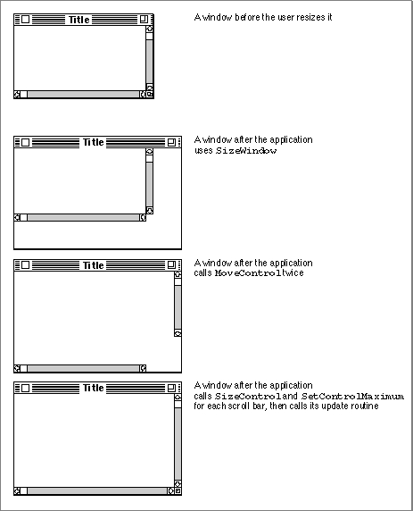
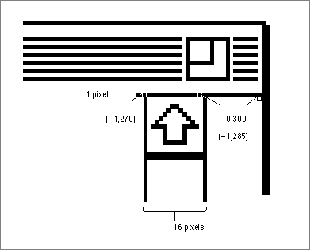

Moving and Resizing Scroll Bars
As described earlier in "Creating Scroll Bars" beginning on page 5-19, your application initially defines the location of a scroll bar within a window--and the size of the scroll bar--by specifying a rectangle in a control resource or in a parameter toNewControl. However, your application must be able to size and move the scroll bar dynamically in response to the user's resizing of your windows.The chapter "Window Manager" in this book describes how to size windows when
your application opens them and how to resize them--for example, in response to
the user dragging the size box or clicking the zoom box. This section describes how to move and resize your scroll bars so that they fit properly on the right and bottom edges of your windows.When resizing your windows, your application should perform the following steps to adjust each scroll bar.
Figure 5-21 illustrates how to move and resize scroll bars in a resized window; if your application neglected to use the
- Resize the window.
- Use the
HideControlprocedure to make each scroll bar invisible.- Use the
MoveControlprocedure to move the vertical scroll bar to the right edge of the window, and use theMoveControlprocedure to move the horizontal scroll bar to the bottom edge of the window.- Use the
SizeControlprocedure to lengthen or shorten each scroll bar, so that each extends to the size box in the lower-right corner of the window.- Recalculate the maximum settings for the scroll bars and use
SetControlMaximumto update the settings and to redraw the scroll boxes appropriately. (Remember, you derive a scroll bar's maximum setting by subtracting the length or width of its window from the length or width of the document.)- Use the
ShowControlprocedure to make each scroll bar visible in its new location.HideControlprocedure, the user would see each of these steps as it took place.Figure 5-21 Moving and resizing scroll bars

Listing 5-14 on page 5-36 shows an application-defined routine,
MyAdjustScrollBars, that is called when the user opens a new window, opens an existing document in a window, or resizes a window.When it creates a window,
MyAdjustScrollBarsstores handles to each scroll bar
in a document record. By dereferencing the proper fields of the document record,MyAdjustScrollBarspasses handles for the vertical and horizontal scroll bars to
theHideControlprocedure, which makes the scroll bars invisible. By making the scroll bars invisible until it has finished manipulating them,MyAdjustScrollBarsensures that the user won't see the scroll bars blinking in different locations onscreen.When
MyAdjustScrollBarsneeds to adjust the size or location of either of the scroll bars, it calls another application-defined routine,MyAdjustScrollSizes, which is shown in Listing 5-24.Listing 5-24 Changing the size and location of a window's scroll bars
CONST kScrollbarWidth = 16; {conventional width} kScrollbarAdjust = kScrollbarWidth - 1; {to align with window frame} kScrollTweek = 2; {to align scroll bars with size box} PROCEDURE MyAdjustScrollSizes (window: WindowPtr); VAR teRect: Rect; myData: MyDocRecHnd; teTop, teRight, teBottom,teLeft: Integer; BEGIN MyGetTERect(window, teRect); {calculate the teRect based on the } { portRect, adjusted for the scroll bars} myData := MyDocRecHnd(GetWRefCon(window)); HLock(Handle(myData)); WITH window^.portRect DO BEGIN teTop := top; teRight := right; teBottom := bottom; teLeft := left; END; WITH myData^^ DO BEGIN editRec^^.viewRect := teRect; {set the viewRect} MyAdjustViewRect(editRec); {snap to nearest line} {move the controls to match the new window size} MoveControl(vScrollBar, teRight - kScrollbarAdjust, -1); SizeControl(vScrollBar, kScrollbarWidth, (teBottom - teTop) - (kScrollbarAdjust - kScrollTweek)); MoveControl(hScrollBar, -1, teBottom - kScrollbarAdjust); SizeControl(hScrollBar, (teRight - teLeft) - (kScrollbarAdjust - kScrollTweek), kScrollbarWidth); END; HUnLock(Handle(myData)); END; {of MyAdjustScrollSizes}TheMyAdjustScrollSizesroutine uses the boundary rectangle of the window's content region--which is stored in theportRectfield of the window record--to determine the size of the window. To move the scroll bars to the edges of the window,MyAdjustScrollSizesuses theMoveControlprocedure.The
MoveControlprocedure takes three parameters: a handle to the control being moved, the horizontal coordinate (local to the control's window) for the new location of the upper-left corner of the control's rectangle, and the vertical coordinate for that new location. TheMoveControlprocedure moves the control to this new location and changes the rectangle specified in thecontrolRectfield of the control's control record.In Listing 5-24,
MyAdjustScrollSizespasses toMoveControlthe handles to the scroll bars. (The SurfWriter sample application stores the handle in its document record for the window.)Figure 5-22 illustrates the location of a vertical scroll bar before it is moved to a new location within its resized window.
To determine a new horizontal (that is, left) coordinate of the upper-left corner of the vertical scroll bar,
MyAdjustScrollSizessubtracts 15 from the right coordinate of
the window. As shown in Figure 5-23, this puts the right edge of the 16-pixel-wide scroll bar directly over the 1-pixel-wide window frame on the right side of the window.In Listing 5-24 on page 5-61,
MyAdjustScrollSizesspecifies -1 as the vertical (that is, top) coordinate of the upper-left corner of the vertical scroll bar. As shown in Figure 5-23, this places the top edge of the scroll bar directly over the 1-pixel-wide line at the bottom of the title bar. (The bottom line of the title bar has a vertical value of -1 in the window's local coordinate system.)The
MyAdjustScrollSizesroutine specifies -1 as the horizontal coordinate of the upper-left corner of the horizontal scroll bar; this puts the left edge of the horizontal scroll bar directly over the 1-pixel-wide window frame. (The left edge of the window frame has a horizontal value of -1 in the window's local coordinate system.)To fit your scroll bars inside the window frame properly, you should set the top coordinate of a vertical scroll bar at -1 and the left coordinate of a horizontal scroll bar
at -1, unless your application uses part of the window's scroll regions opposite the size box for displaying information or additional controls. For example, you may choose to display the current page number of the document in the lower-left corner of a window. In this case, specify a left coordinate so that the horizontal scroll bar doesn't obscure
this area.Figure 5-22 A vertical scroll bar before the application moves it within a resized window

Figure 5-23 A vertical scroll bar after the application moves its upper-left point
See Macintosh Human Interface Guidelines for a discussion of appropriate uses of a window's scroll areas for items other than scroll bars.
To determine a new vertical coordinate for the upper-left corner of the horizontal scroll bar,
MyAdjustScrollSizessubtracts 15 from the bottom coordinate of the window; this puts the bottom edge of the scroll bar directly over the window frame at the bottom of the window.The
MoveControlprocedure moves the upper-left corner of a scroll bar so that it's in the proper location within its window frame. To make the vertical scroll bar fit the height of the window, and to make the horizontal scroll bar fit the width of the window,MyAdjustScrollSizesthen uses theSizeControlprocedure.The
SizeControlprocedure takes three parameters: a handle to the control being sized, a width in pixels for the control, and a height in pixels for the control. When resizing a vertical scroll bar, you adjust its height; when resizing a horizontal scroll bar, you adjust its width.When using
SizeControlto adjust the vertical scroll bar,MyAdjustScrollSizespasses a constant representing 16 pixels for the vertical scroll bar's width, which is the conventional size.To determine the proper height for this scroll bar,
MyAdjustScrollSizesfirst derives the height of the window by subtracting the top coordinate of the window's rectangle from its bottom coordinate. ThenMyAdjustScrollSizessubtracts 13 pixels from this window height and passes the result toSizeControlas the height of the vertical scroll bar. TheMyAdjustScrollSizesroutine subtracts 13 pixels from the window height to leave room for the 16-pixel-high size box (at the bottom of the window) minus three 1-pixel overlaps: one at the top of the window frame, one at the top of the size box, and one at the bottom of the size box.When using
SizeControlto adjust the horizontal scroll bar,MyAdjustScrollSizespasses a constant representing 16 pixels--the conventional height of the horizontal scroll bar. To determine the proper width of this scroll bar,MyAdjustScrollSizesfirst derives the width of the window by subtracting the left coordinate of the window's rectangle from its right coordinate. From this window width,MyAdjustScrollSizesthen subtracts 13 pixels to allow for the size box (just as it does when determining the height of the vertical scroll bar).When
MyAdjustScrollSizescompletes, it returns toMyAdjustScrollBars,
which then uses another of its own routines,MyAdjustScrollValues. In
turn,MyAdjustScrollValuescallsMyAdjustHV(shown in Listing 5-16 on page 5-38), which recalculates the maximum settings for the scroll bars and usesSetControlMaximumto update the maximum settings and redraw the scroll
boxes appropriately.When
MyAdjustHVcompletes, it eventually returns to the SurfWriter application'sMyAdjustScrollBarsprocedure, which then uses theShowControlprocedure
to make the newly adjusted scroll bars visible again.